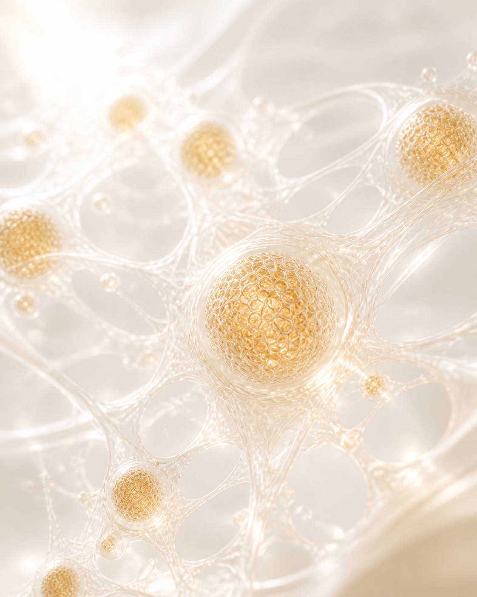
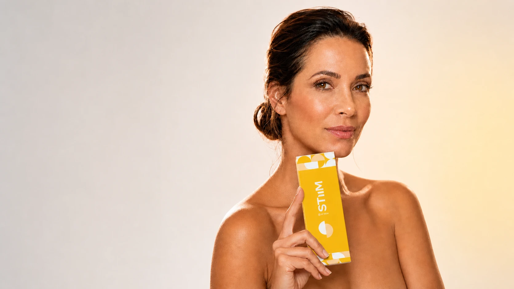
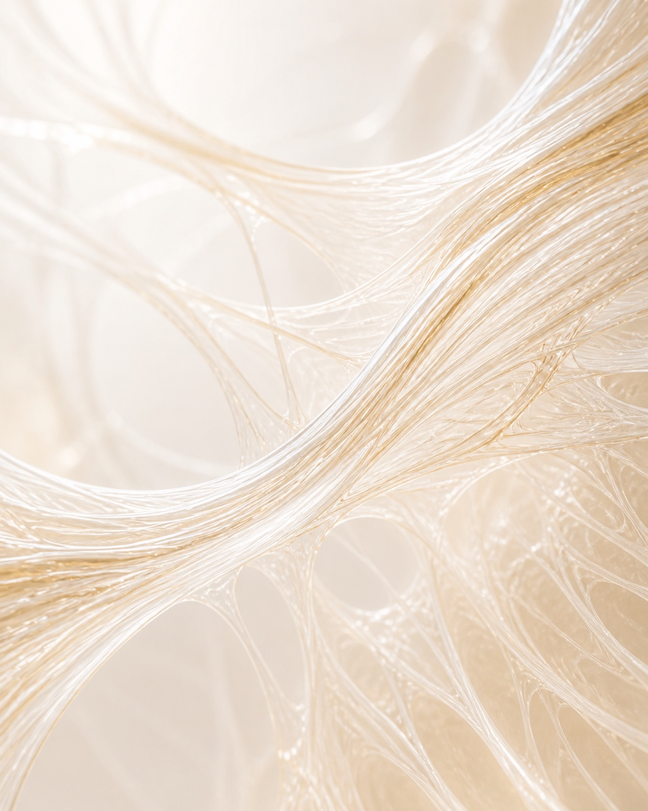
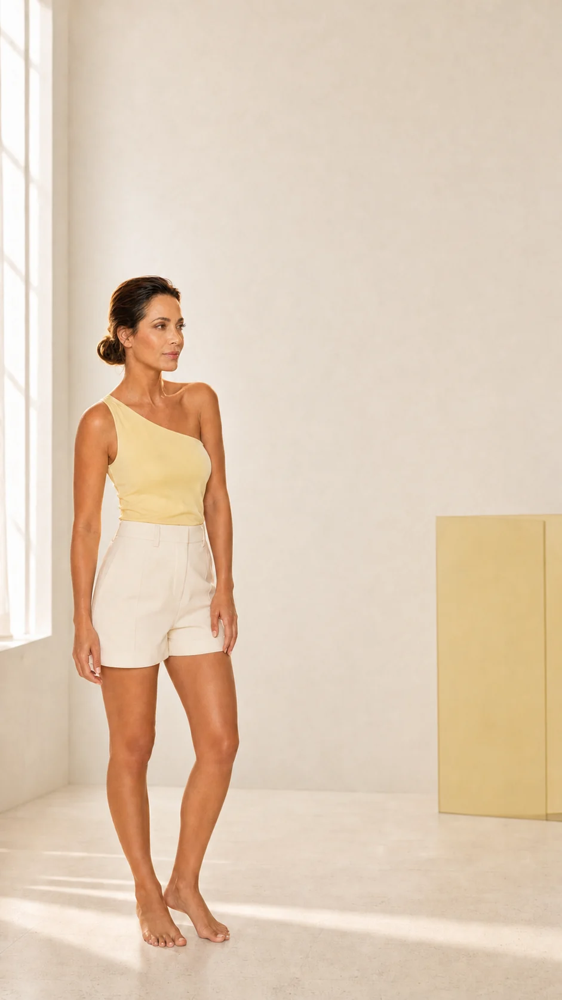

Ciência celular
Bioestimulação
Estímulo à produção de colágeno.
Renovação
Favorece a renovação e a qualidade da pele.
Regeneração
Restauração da matriz extracelular.

Bioestimulação · Regeneração · Longevidade
A Hidroxiapatita de Cálcio da ILIKIA desenvolvida para bioestimulação de colágeno, regeneração tecidual e melhora global da qualidade da pele.1
O que é STIIM
STIIM atua na estrutura dérmica, na função celular e na qualidade da pele. Sua resposta inflamatória controlada e biocompatível promove regeneração tecidual e remodelamento progressivo.

Ciência celular
Estímulo à produção de colágeno.
Favorece a renovação e a qualidade da pele.
Restauração da matriz extracelular.

Estrutura da pele
Evolução progressiva da estrutura dérmica.
Ativação celular e longevidade cutânea.
Espessamento dérmico e sustentação.
Resultado natural
Resultados progressivos, naturais e duradouros.
Tecnologia Lattice-Pore®
A arquitetura tridimensional de STIIM favorece uma degradação lenta e uniforme, com melhor dispersão no tecido e estímulo sustentado.
Morfologia da superfície
Microscopia FE-SEM x5.000.


Produto AGeometria irregular, com degradação mais heterogênea e perda precoce de volume.
STIIMLiberação gradual em camadas concêntricas, sustentando o estímulo por mais tempo.
ResultadoDepósito mais homogêneo e resposta biológica progressiva.
Mecanismo de ação
Uma resposta progressiva que acompanha o tempo biológico da pele.
Até 4 semanas
Aspecto viçoso e início do estímulo de fibroblastos e produção de colágeno.
Médio e longo prazo · até 24 meses
Bioestimulação, reposicionamento dos tecidos e melhora da qualidade da pele.
Resposta contínua
Regeneração profunda e modulação de marcadores associados à juventude biológica.1
SIRT-1 · SIRT-3 · FOXO3Proteção celular, metabolismo mitocondrial, homeostase e capacidade de reparo.
Evidências científicas
Produção equilibrada de colágeno tipo I e III, associada à restauração da matriz extracelular e à longevidade cutânea.
Resposta inicial
Picos de produção
Evolução clínica e estrutural
Percepção e manutenção dos resultados
Genes marcadores: SIRT-1 +26,9% · SIRT-3 +86,0% · FOXO3 +29,9%.
Uma evolução que acompanha o tempo biológico da pele.
Receber as evidências completas
Aplicação e versatilidade
Para pacientes jovens ou peles maduras, STIIM permite abordagens personalizadas de prevenção, correção e manutenção.
Contorno facialRedefinição do perímetro do rosto
Região malarProjeção e sustentação do terço médio
MandíbulaDefinição do contorno mandibular e suporte estrutural
TêmporasRestauração do volume temporal e transição do terço superior
PescoçoTextura, firmeza e qualidade da pele
Acesso profissional
Receba o material técnico-científico, as evidências clínicas, o protocolo de aplicação, condições comerciais e o contato da equipe ILIKIA.
Nossa equipe entrará em contato pelo canal informado.